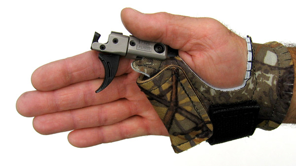

| Product | price |
|---|---|
| Arm Gaurd | $25 |
| Finger Gaurd | $30 |
| Quiver | $45 |
| Release | $35 |
| Silencers | $15 |
Arm Gaurd
An arm gaurd is the perfect tool if you are just starting out with Archery. It helps to prevent the bow string from striking your arm and causing enjury. Even the most skilled archers use arm gaurds when shooting multiple rounds.

Finger Gaurd
Finger gaurds are perfect for when you are shooting multiple rounds. It helps to protect your fingers from getting soar or raw from the constant rubbing of the bow string. Beginners and professionals alike use them, so don't let your fingers get raw.

Quiver
Quivers come in many different varieties but the function is the same. They hold
the arrows so you dont have to. It is important to any archer to have a good quiver on his
(or her) side or back.

Release
A release assist ,or more commonly known as simply release, is used inplace of the finger gaurd. The release protects your fingers and helps to have a steady aim. Simply clip it on the string, pull it back, and fire away.
Silencer
Silencers are most commonly used for the bow hunters or people who dont like that loud *twang* sound. They attach easily to either end of the bow and reduce the sound of the string when released.